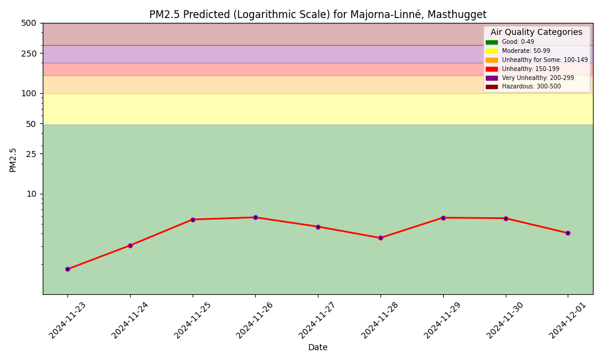

PM2.5 Forecast
Model Performance Monitoring
1-Day Hindcast: Predictions vs Outcomes

Future Improvements
A future improvement could be interacting with the air quality ML system using language (text or voice), powered by a function-calling LLM.